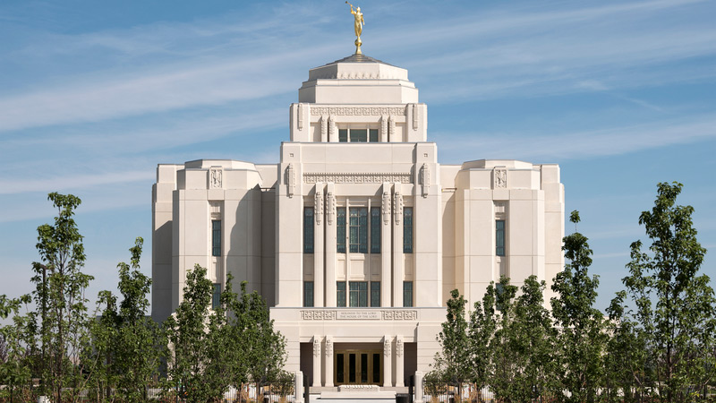
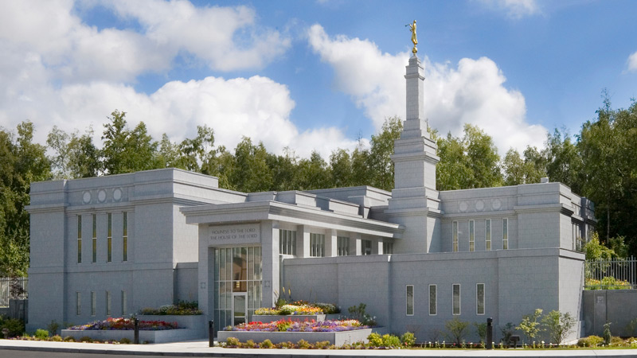

Meridian Idaho Temple

Address
7355 N Linder Rd
Meridian, ID 83646
Phone Number
(208) 957-7300
Services
No clothing rental available
No cafeteria available
No patron housing available
No distribution center nearby
History
Announced: April 2, 2011
Groundbreaking: August 23, 2014
Dedicated: November 19, 2017
Ordinance Schedule
Baptims: 5:15 AM - 9:00 PM
Initiatories: 5:30 AM - 9:00 PM
Endowments: 5:15 AM - 7:30 PM
Sealings: 6:00 AM - 9:00 PM
Session Schedule
Sessions every 45 minutes beginning
at 5:15 AM and ending at 7:30 PM.
Temple Closures
Salt Lake Temple
Address
50 W North Temple Street
Salt Lake City, UT 84150
Phone Number
(801) 240-2640
Services
Clothing rental available
Cafeteria available
No patron housing available
Distribution center nearby
History
Announced: July 28, 1847
Groundbreaking: February 14, 1853
Dedicated: April 6, 1893
Ordinance Schedule
Baptims: 5:00 AM - 8:00 PM
Initiatories: 6:00 AM - 8:00 PM
Endowments: 6:00 AM - 7:00 PM
Sealings: 7:00 AM - 8:00 PM
Session Schedule
Sessions every hour beginning at
6:00 AM and ending at 7:00 PM.
Temple Closures
Nauvoo Temple
Address
50 N Wells Street
Nauvoo, IL 62354
Phone Number
(217) 453-6252
Services
Clothing rental available
No cafeteria available
No patron housing available
No distribution center nearby
History
Announced: April 4, 1999
Groundbreaking: October 24, 1999
Dedicated: June 27, 2002
Ordinance Schedule
Baptims: 9:00 AM - 2:00 PM
Initiatories: 9:00 AM - 2:00 PM
Endowments: 9:00 AM - 12:00 PM
Sealings: 9:00 AM - 2:00 PM
Session Schedule
Sessions every hour beginning at
9:00 AM and ending at 12:00 PM.
Temple Closures
Anchorage Alaska Temple

Address
13161 Brayton Drive
Anchorage, AK 99516
Phone Number
(907) 348-7890
Services
No clothing rental available
No cafeteria available
No patron housing available
No distribution center nearby
History
Announced: October 4, 1997
Groundbreaking: April 17, 1997
Dedicated: January 9, 1999
Rededicated: February 8, 2004
Ordinance Schedule
Baptims: 6:30 AM - 8:30 PM
Initiatories: 6:30 AM - 8:00 PM
Endowments: Check lds.org for details
Sealings: Check lds.org for details
Session Schedule
Sessions scheduled at various times throughout
the week. Check lds.org for details
Temple Closures